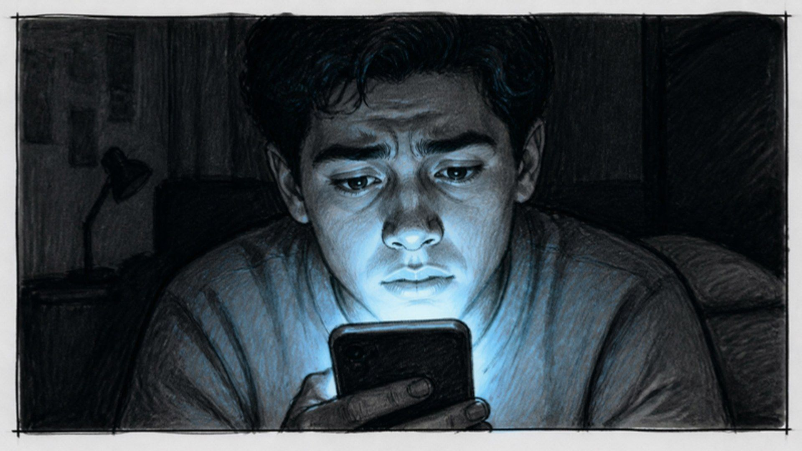
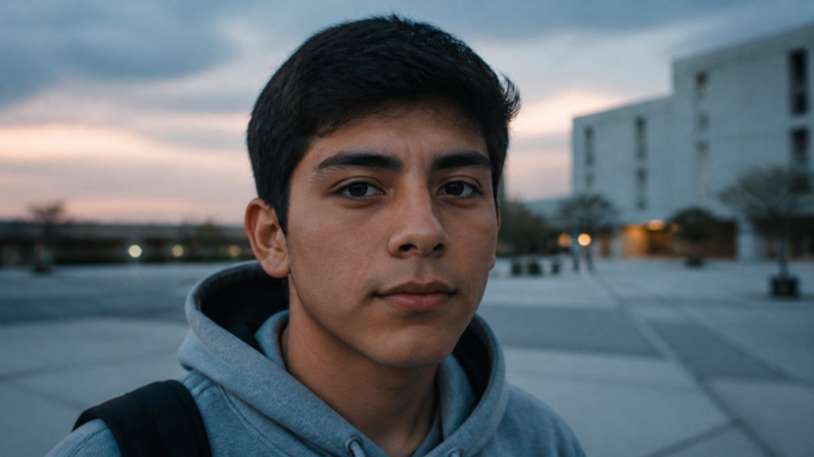

Creación de Contenidos Digitales · Semana 9
Del guion al storyboard
Narrativa audiovisual y sonora, guiones, storyboard y fotografía para la preproducción
Recurso educativo de creación propia
Ruta de la sesión
90 minutos, de la idea al plan de producción
| Minuto | Momento | Producto |
|---|---|---|
| 0–6 | Apertura: ¿qué recordamos de un contenido? | Pregunta detonante |
| 6–18 | Narrativa audiovisual y narrativa sonora | Mostrar frente a hacer imaginar |
| 18–26 | Estructura de una historia | Seis elementos del relato |
| 26–44 | Guion literario, técnico y auditivo | Una escena en tres guiones |
| 44–66 | Storyboard y fotografía para preproducción | Anatomía de una viñeta |
| 66–90 | Reto de producción: sorteo y preproducción | Narrativa y guion del equipo |
Creación de Contenidos Digitales
Resultados de aprendizaje
Al terminar, cada estudiante podrá
Diferenciar
la narrativa audiovisual de la sonora y elegir la adecuada para un mensaje.
Estructurar
una historia con personaje, objetivo, conflicto, acción, resultado y aprendizaje.
Escribir
guiones literario, técnico y auditivo a partir de la misma historia.
Planificar
la producción con un storyboard y fotografías de referencia.
Creación de Contenidos Digitales
Pregunta detonante
¿Cuál de estos tres recordarían dentro de una semana?
Caso 1
Técnica impecable, historia pobre
Video institucional con dron, cámara de cine y música épica. Muestra el campus, pero no cuenta nada.
Caso 2
Celular, historia excelente
Una estudiante cuenta su primer día en la U: se perdió, llegó tarde y un desconocido la ayudó.
Caso 3
Podcast sencillo, narrativa cautivadora
Tres minutos de audio: lluvia, pasos, una voz que recuerda la noche antes de un parcial.
Creación de Contenidos Digitales
Lo que queda en la memoria
Casi nunca recordamos
la cámara
la iluminación
la edición
Recordamos
la historia
el mensaje
la emoción
el aprendizaje
La narrativa es el motor de la comunicación digital.
Narrativa multimedia
Narrar es organizar acontecimientos para comunicar una idea
Un error común es creer que narrar es solo entretener con historias. Una narrativa también sirve para:
Enseñar
Un tutorial que sigue a alguien que aprende.
Persuadir
Una campaña que muestra el antes y el después.
Informar
Una noticia contada desde quien la vive.
Sensibilizar
Un testimonio que pone rostro a un problema.
Creación de Contenidos Digitales
Comparativa
El video nos muestra; el audio nos hace imaginar
Narrativa audiovisual
Combina imagen, movimiento, sonido, música y texto.
Ejemplo: un estudiante preocupado, la biblioteca, un examen, una conversación. Sin explicarlo, entendemos la situación.
Narrativa sonora
Trabaja solo con voz, efectos, música, ambiente y silencio.
Ejemplo: un reloj, una respiración agitada, una puerta que se cierra. Cada oyente construye su propia imagen.
Creación de Contenidos Digitales
Escuchen y respondan
¿Qué imaginan si escuchan esto?
01
Lluvia
02
Pasos rápidos
03
Respiración acelerada
Después de escuchar: el cerebro construye la escena sin verla. Cada uno imaginó un lugar, una hora y un personaje distintos.
Una situación, dos lenguajes
“Un estudiante llega tarde a una evaluación.” ¿Cómo lo contarían?
En video
Plano detalle del reloj · el estudiante corre por el pasillo · plano medio de la puerta cerrada · primer plano de su cara al ver el aula llena.
En audio
Tic-tac de reloj · pasos que corren · una puerta que se abre · silencio total · una voz: “Puede sentarse, pero ya empezamos”.
En video, el tiempo se ve en el reloj. En audio, el silencio del salón cuenta más que cualquier narrador.
Creación de Contenidos Digitales
Del storytelling a la producción
Seis preguntas antes de escribir una sola escena
| Elemento | Pregunta | Ejemplo: uso responsable de la IA |
|---|---|---|
| Personaje | ¿Quién es? | Un estudiante de segundo semestre |
| Objetivo | ¿Qué quiere lograr? | Aprobar una asignatura difícil |
| Conflicto | ¿Qué problema enfrenta? | Quiere usar la IA para hacerlo todo |
| Acción | ¿Qué hace para resolverlo? | Aprende a verificar la información |
| Resultado | ¿Qué ocurre? | Mejora su desempeño académico |
| Aprendizaje | ¿Qué nos deja? | La IA es una herramienta, no un sustituto del pensamiento crítico |
Creación de Contenidos Digitales
Guiones multimedia
Una historia en la mente debe volverse un documento de trabajo
Guion literario
¿Qué sucede?
Personajes, acciones, contexto, diálogos y emociones.
Guion técnico
¿Cómo lo grabamos?
Escena, plano, ángulo, audio, iluminación y duración.
Guion auditivo
¿Cómo se escuchará?
Narración, voces, música, efectos, pausas y silencios.
Los tres parten de la misma historia. En el reto, los equipos de video escriben literario y técnico; los de audio, literario y auditivo.
Creación de Contenidos Digitales
Guion literario · ¿qué sucede?
Se escribe como se va a ver, en presente
ESC. 1 — INT. HABITACIÓN DE CARLOS — NOCHE
Carlos, 20 años, está acostado con el celular en la mano. Desliza sin parar. La luz de la pantalla le ilumina la cara.
CARLOS
(en voz baja)
Uno dice que es normal, otro que es grave… ¿a quién le creo?
Deja el celular boca abajo y mira el techo.
Encabezado: número, interior o exterior, lugar y momento del día.
Acción: solo lo que se ve o se oye, nunca lo que el personaje “piensa”.
Diálogo: nombre del personaje, acotación y texto.
Creación de Contenidos Digitales
Guion técnico · ¿cómo lo grabamos?
La misma escena, dividida en tomas
| Toma | Plano | Ángulo | Acción | Audio | Luz | Seg. |
|---|---|---|---|---|---|---|
| 1.1 | Plano general | Normal | Carlos acostado con el celular | Ambiente nocturno, notificaciones | Solo pantalla | 4 |
| 1.2 | Plano detalle | Cenital | El dedo desliza publicaciones contradictorias | Sonido de scroll | Pantalla | 3 |
| 1.3 | Primer plano | Normal | Carlos dice su línea | Diálogo con sonido directo | Pantalla en el rostro | 5 |
| 1.4 | Plano medio | Picado | Deja el celular y mira el techo | Silencio, entra música suave | Penumbra | 4 |
Creación de Contenidos Digitales
Guion auditivo · ¿cómo se escuchará?
La misma escena, contada solo con sonido
| Tiempo | Voces y narración | Música | Efectos y ambiente |
|---|---|---|---|
| 00:00 | — | — | Grillos lejanos. Tres notificaciones de celular. |
| 00:06 | CARLOS (susurro): Uno dice que es normal, otro que es grave… ¿a quién le creo? | — | Sonido de scroll |
| 00:14 | NARRADORA: Cada día recibimos cientos de mensajes sobre salud mental. No todos dicen la verdad. | Piano suave entra poco a poco | — |
| 00:24 | — | Baja la música | Celular boca abajo sobre la mesa. Silencio de 2 segundos. |
El guion auditivo necesita una narradora porque, sin imagen, alguien tiene que dar el contexto que en el video da la cámara.
Creación de Contenidos Digitales
Detecten el error
Este guion técnico no se puede grabar. ¿Qué le falta?
Escena 2
“Carlos va a bienestar universitario y se siente mejor.”
Plano y ángulo
Acción visible
Audio
Locación y luz
Duración
Storyboard
El storyboard es al video lo que el plano es a una construcción
Es la representación visual, viñeta por viñeta, de lo que vamos a grabar. Sin él se pierde tiempo, se olvidan tomas y se desorganiza la producción.
Organizar
el orden de las tomas
Visualizar
el encuadre antes de grabar
Planificar
tiempos, lugares y recursos
Comunicar
la idea a todo el equipo
Creación de Contenidos Digitales
Anatomía de una viñeta
Cada viñeta responde cinco preguntas
Viñeta 3 de 8
Plano · ¿cómo se verá?
Plano medio, ángulo normal
Acción · ¿qué ocurre?
Carlos lee en el portátil y frunce el ceño
Audio · ¿qué escucharemos?
Teclado y una notificación
Duración · ¿cuánto dura?
4 segundos
Creación de Contenidos Digitales
Comparativa
¿Con cuál viñeta otro equipo podría grabar sin preguntarles nada?
Viñeta A
“Carlos triste”
Sin plano, sin acción concreta, sin audio, sin duración.
Viñeta B

Primer plano · Carlos mira el celular en silencio · notificación al fondo · 3 segundos
Creación de Contenidos Digitales
Fotografía para la preproducción
Cada fotografía es una decisión narrativa congelada
Antes de grabar, la cámara del celular sirve para probar ideas. Una foto bien pensada ya responde qué mostrar, desde dónde y con qué luz.
Fotostoryboard
Fotografiar cada viñeta con el equipo posando, en lugar de dibujarla.
Exploración de locaciones
Fotos de los lugares para revisar fondo, espacio, ruido y permisos.
Referencia de luz
Fotos a la hora de grabación para saber de dónde viene la luz.
Creación de Contenidos Digitales
Creación de Contenidos Digitales
Pregunta fotográfica
Misma persona, mismo lugar. ¿Cuál foto transmite soledad?
Foto A

Foto B
Respuesta: la B. El espacio vacío alrededor del personaje (espacio negativo) comunica aislamiento; la A muestra a la persona, pero no su situación.
Actividad del corte · Reto de producción
Una card, una historia, una experiencia de máximo 5 minutos
1
Formen equipos nuevos de 3 a 4 personas.
2
Un integrante pasa al frente y elige una card en el tablero.
3
La card trae la historia, el tipo de experiencia y lo que deben incluir.
4
Hoy escriben y planean; la próxima semana graban.
Podcast narrativo
Audiorrelato inmersivo
Video narrativo
Video sin diálogos
Minidocumental
Fotorrelato narrado
Fases del reto
Siete fases en dos semanas, un solo recurso final
Semana 9 · Preproducción
1. Ficha del reto y narrativa
2. Guion literario
3. Guion técnico o guion auditivo
4. Storyboard y fotos de referencia
Entregable: storyboard, antes de la clase 10
Semana 10 · Producción
5. Plan de grabación
6. Práctica de grabación en clase
7. Montaje y entrega del recurso
Entregable final: recurso de máximo 5 minutos
Creación de Contenidos Digitales
Cierre · 3 minutos
¿Qué fue más difícil: tener la idea o convertirla en acciones, imágenes y sonidos?
Un creador de contenidos no improvisa: diseña experiencias. Y toda experiencia memorable comienza con una buena historia.
Para la próxima clase
Storyboard terminado · celular cargado y con espacio libre · audífonos · el guion a mano
Referencias
Para profundizar
- Balsebre, A. (1994). El lenguaje radiofónico. Cátedra.
- Field, S. (1995). El libro del guion: fundamentos de la escritura de guiones. Plot.
- Katz, S. D. (1991). Film directing shot by shot: visualizing from concept to screen. Michael Wiese Productions.
- McKee, R. (2002). El guion. Story: sustancia, estructura, estilo y principios de la escritura de guiones. Alba.
- Rodero, E. (2005). Producción radiofónica. Cátedra.
- Adams, K. (2007). How to improvise a full-length play. Allworth Press.
Creación de Contenidos Digitales